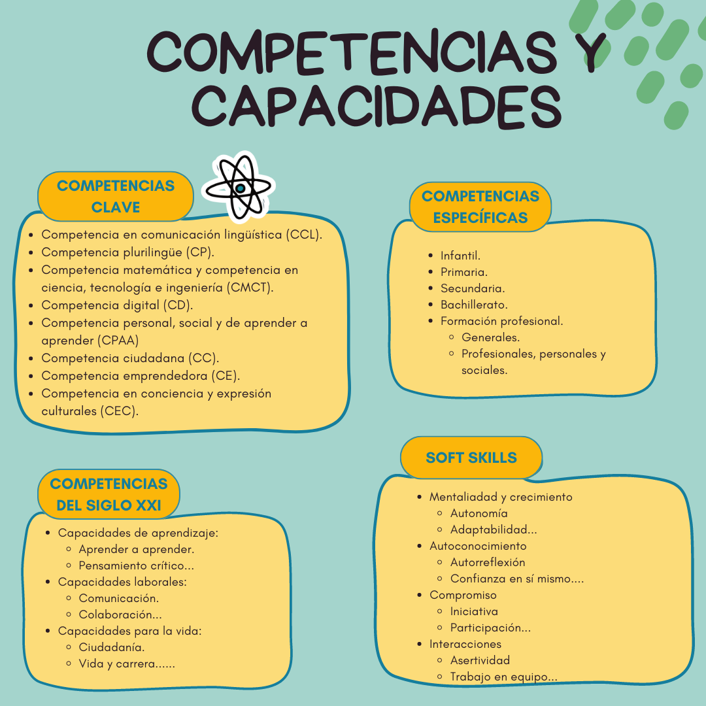
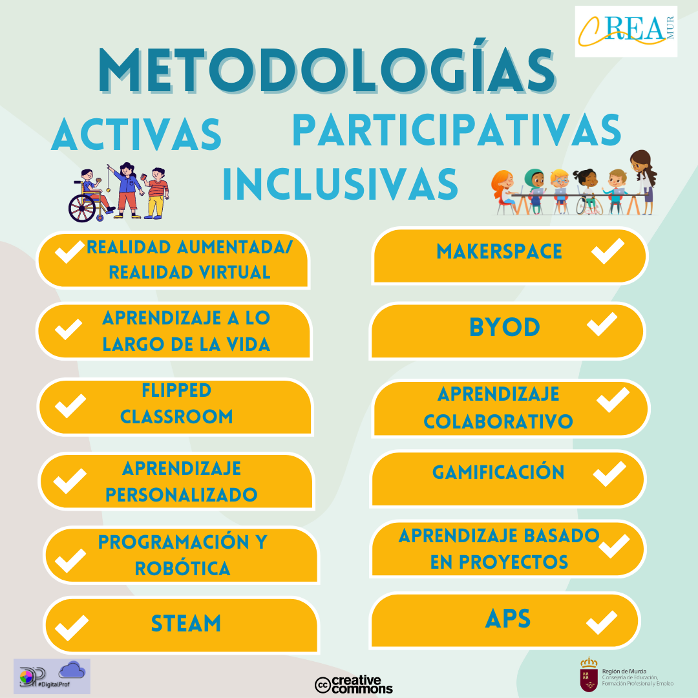
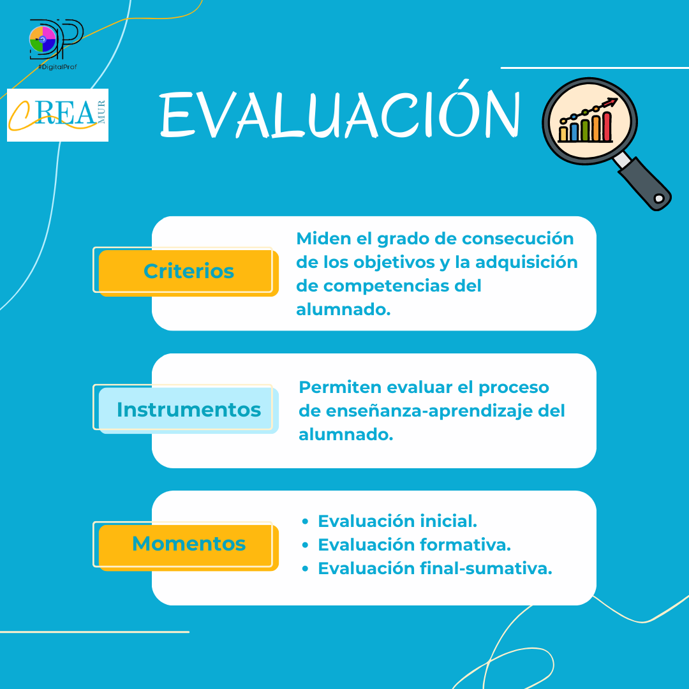
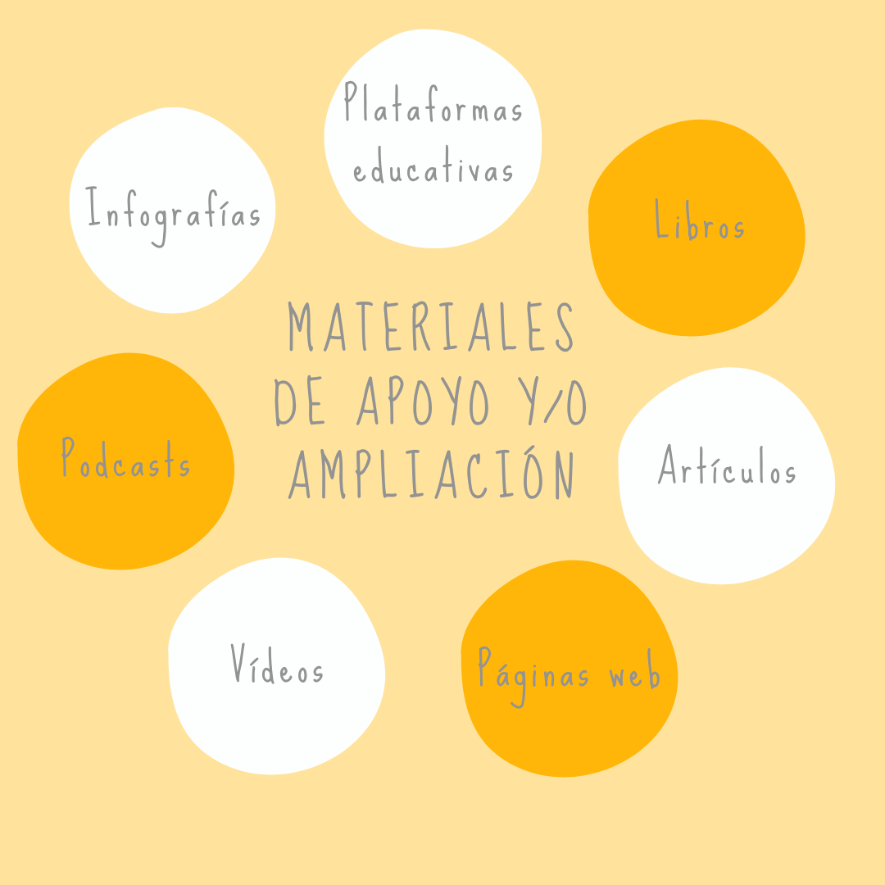

Descripción
COMPETENCIAS

Identifica las competencias que se van a adquirir con el recurso educativo.
OBJETIVOS
Enumera objetivos claros y específicos que describan lo que se espera que los estudiantes logren alcanzar.
CONTENIDOS
Redacta los contenidos que se abordarán en el recurso educativo.
METODOLOGÍA

Debes tener en cuenta los siguientes aspectos:
- PEDAGOGÍAS ACTIVAS
- Aprendizaje adaptativo.
- Aprendizaje cooperativo.
- Aprendizaje-servicio.
- Aprendizaje basado en proyectos.
- Gamificación.
- Aula invertida- flipped classroom.
- Otros...
- AGRUPAMIENTOS
- Individual.
- Por pares.
- Pequeño grupo.
- Gran grupo.
- ACCESIBILIDAD E INCLUSIÓN
- Comprobación de contraste.
- Uso de texto alternativo en imágenes.
- Vídeos subtitulados o con intérprete de signos, etc...
EVALUACIÓN

Establece criterios claros y específicos para evaluar el progreso y los logros de los estudiantes, identificando los momentos y los instrumentos de evaluación que se utilizarán.
MATERIALES DE APOYO Y/O AMPLIACIÓN

Algunos ejemplos serían:
- Herramientas
- Plataformas
- Libros
- Artículos
- Enlaces a sitios web relevantes
- Vídeos
- Podcasts
- Infografías
- Otros materiales relacionados
RECOMENDACIONES
Incluye recomendaciones generales y específicas que puedan ayudar al docente a llevar a cabo el recurso educativo. Por ejemplo:
1. Fomenta la reflexión: Anima a los estudiantes a reflexionar sobre su propio aprendizaje y a relacionarlo con sus conocimientos previos.
2. Promueve la colaboración: Fomenta el trabajo en equipo y la colaboración entre los estudiantes. Asigna actividades en grupo que requieran la comunicación, el intercambio de ideas y la resolución conjunta de problemas.
3. Ajusta y mejora: Reflexiona sobre lo que funcionó bien y lo que se puede mejorar. Realiza ajustes según sea necesario y utiliza esta retroalimentación para mejorar el recurso educativo.
4. Utiliza tecnología educativa: Integra herramientas tecnológicas y recursos digitales para enriquecer el aprendizaje.
5. Proporciona retroalimentación: Ofrece retroalimentación a los estudiantes sobre su progreso en relación con los objetivos del recurso educativo.